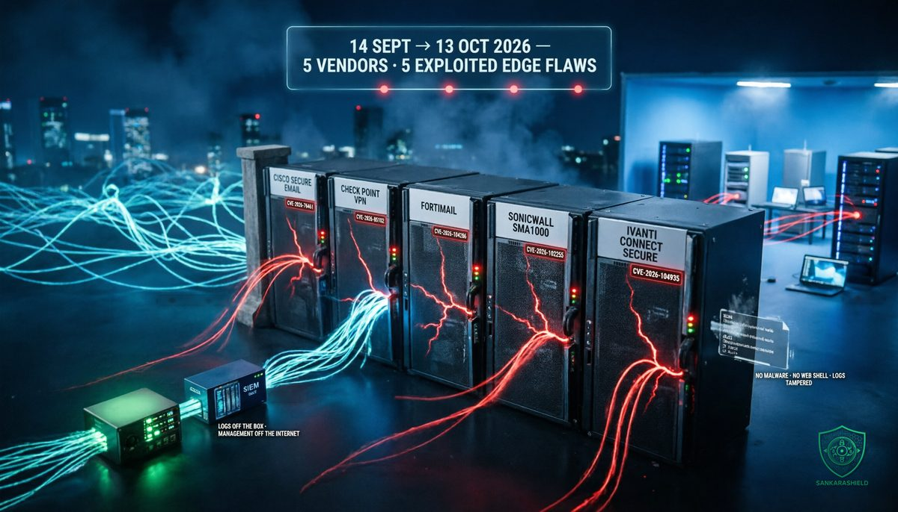

Five vendors. Thirty days. Every one of them sells the box that is supposed to keep attackers out.

Between 14 September and 13 October 2026, Cisco, Check Point, Fortinet, SonicWall and Ivanti each disclosed a critical vulnerability in an internet-facing appliance: a mail gateway, a VPN gateway, a remote access portal. In every case, exploitation was either confirmed by the vendor or reported by researchers and national cyber agencies.
None of these products is obscure. They are the devices organisations buy precisely so that the internet stops at their edge. Taken one by one, each advisory looks like a patching task. Taken together, they describe where attackers now go first.
WHAT ACTUALLY HAPPENED
- CISCO SECURE EMAIL GATEWAY CVE-2026-76461 (CVSS 9.8)
Disclosed on 14 September. A SQL injection flaw in the email parsing of AsyncOS, the operating system of Cisco's mail gateways. An unauthenticated attacker sends one crafted email and can reach command execution as root on the appliance. Physical and virtual gateways are affected. Cisco confirmed exploitation, CISA added the flaw to its Known Exploited Vulnerabilities (KEV) catalog, and the Singapore Cyber Security Agency reported active exploitation on 18 September. There is no workaround. Fixed releases are 15.5.5-014, 16.0.4-302 and 16.5.0-780.
- CHECK POINT QUANTUM SECURITY GATEWAY CVE-2026-85102 (CVSS 9.8)
An improper certificate validation weakness in the VPN negotiation of Check Point's Security Gateway, reaching remote code execution before authentication. Check Point fixed it on 9 September, the Dutch NCSC warned on 10 September that exploitation was expected, and Check Point later confirmed malicious activity starting on 12 September, with attackers hiding behind VPNs and proxies. CISA added it to KEV on 22 September with a federal deadline of 25 September. Check Point recommends LivePatch Take 26 on R81.20, R82 and R82.10, or a fixed Jumbo Hotfix. The same day, CISA also listed CVE-2026-93616, a separate exploited flaw in the Check Point Management web service.
- FORTINET FORTIMAIL CVE-2026-104286 (CVSS 9.8)
A path traversal with NULL-byte handling that lets an unauthenticated attacker write arbitrary files on the mail gateway. CISA added it to KEV on 1 October with a three-day federal deadline. When the deadline was set, the fixes, FortiMail 8.0.2, 7.6.7 and 7.4.9, were announced but not yet available, and the 7.2 branch gets no fix at all. Observed compromises included files planted to load attacker code into every process on the box. Fortinet's interim mitigation is to disable Identity-Based Encryption and keep the management interface off the internet.
- SONICWALL SMA1000 CVE-2026-102255 (CVSS 10.0)
A pre-authentication server-side request forgery (SSRF) in the WorkPlace portal of the SMA1000 remote access appliances (6210, 7210 and 8200v, including virtual deployments). An unauthenticated attacker can make the appliance send requests on their behalf and reach internal functionality. SMA 100 devices and SSL-VPN on SonicWall firewalls are not affected. SonicWall's advisory says it has no evidence of exploitation. Researchers nonetheless counted 135 exploitation attempts within days of disclosure, and the Canadian Centre for Cyber Security updated its alert on 9 October to acknowledge public reports of exploitation. It is the third CVSS 10.0 flaw in the same portal this year, after July and September.
- IVANTI CONNECT SECURE CVE-2026-104935 (CVSS 8.6)
An authentication bypass and remote code execution in Ivanti's VPN gateway, confirmed as exploited by Ivanti on 13 October and added to KEV. Volexity, which reported it, tracks the actor as UTA0576 and says it has chained the bug since at least 3 October with a third flaw, a privilege escalation, to reach root on fully patched devices. Fixed releases exist for the first two flaws (22.8R2.5, 25.1.1.2, 25.1.3.0 and later); according to Volexity, the fix for the third is still pending.
THE IVANTI DETAIL THAT CHANGES THE PLAYBOOK
The most important line in this month's advisories is not a CVSS score. It is how the Ivanti attacker operated.
According to Volexity, UTA0576 deployed no malware and no web shell. Instead, it re-exploited the device for every single command it wanted to run, and tampered with the logs along the way. Nothing persistent was written to disk.
That approach defeats the tool most Ivanti customers rely on to answer "were we compromised?": the Integrity Checker Tool, which compares the file system against a known-good state. If nothing on disk changed, the checker has nothing to find. CISA warned that it may miss this exploitation because the commands run in memory.
For defenders, that splits one question into two. "Is the device patched?" and "Is the device clean?" now need separate answers, and the second one requires forensics, network evidence and logs stored somewhere the attacker could not reach.
WHY THE EDGE IS NOW THE TARGET
Five codebases, one pattern: reachable from the internet, exploitable before login, on a device that holds the keys.
Edge appliances combine every property an attacker wants.
They are exposed by design. A VPN concentrator or mail gateway exists to accept connections from anyone on the internet. There is no way to hide it behind the firewall, because it often is the firewall.
They are hard to watch. These are closed appliances running vendor firmware. Most cannot run an EDR agent, offer limited shell access and keep their logs locally. The security team that monitors every laptop in detail often has almost no visibility into the box that terminates every remote session.
They hold trust. A VPN gateway sees user credentials and session tokens. A mail gateway reads password resets, invoices and MFA codes before users do. A remote access portal has a route into the internal network. Compromise the appliance and you inherit all of it, without touching an endpoint.
They are patched slowly. Appliances need maintenance windows, firmware upgrades sometimes require reboots of business-critical services, and smaller organisations often depend on an integrator to do it. Attackers know that the window between advisory and patch is measured in weeks for many customers.
The result is visible in this month's timeline. Ivanti was exploited before disclosure. Check Point saw attacks three days after its fix, and SonicWall saw exploitation attempts within days of its advisory. The KEV deadlines CISA sets, three days for FortiMail and Check Point, reflect how fast these flaws are weaponised.
WHY THIS IS A NETWORK ARCHITECTURE PROBLEM
Treating each of these advisories as an isolated patch misses the structural issue. The classic perimeter model puts a small number of very trusted devices at the edge and assumes they will hold. When one of them falls, everything behind it inherits the breach.
Three architecture choices decide how bad that is.
Where the management plane lives. If an appliance's admin interface is reachable from the internet, or from user VLANs, an attacker has two attack surfaces instead of one. Several of this month's flaws, and their mitigations, revolve around management interfaces.
Where the logs live. If the only record of what happened sits on the compromised box, the attacker controls the evidence. The Ivanti case shows that this is no longer theoretical.
What the edge device can reach. A VPN gateway that can talk to every internal subnet turns one compromise into network-wide access. Segmenting what the edge can reach, and requiring a second control before sensitive systems, limits the blast radius.
Longer term, the question is whether users should reach internal applications through a network-level VPN at all. Identity-aware zero trust network access (ZTNA) publishes individual applications rather than whole networks, and keeps them from being directly reachable from the internet. It does not remove every risk, but it removes the single exposed box that opens everything.
WHAT TO DO NOW
INVENTORY EVERY INTERNET-FACING APPLIANCE — list each VPN gateway, mail gateway, firewall and remote access portal with its exact version, its owner and the date of its last update. Compare the list against your external attack surface scans, not just your asset register.
PATCH THIS MONTH'S FIVE IN ORDER OF EXPOSURE — Cisco Secure Email (15.5.5-014, 16.0.4-302, 16.5.0-780), Check Point (LivePatch Take 26 or fixed Jumbo Hotfix), FortiMail (8.0.2, 7.6.7, 7.4.9 as they become available; disable IBE until then), SonicWall SMA1000 (per advisory SNWLID-2026-0017), Ivanti Connect Secure (22.8R2.5, 25.1.1.2, 25.1.3.0 or later).
ASSUME COMPROMISE BEFORE THE PATCH — for any of these devices that was exposed during the exploitation window, review logs stored off-box, look for unexpected admin sessions, configuration changes and outbound connections, and check vendor indicators of compromise. A patch closes the door; it does not tell you who walked in.
TAKE MANAGEMENT OFF THE INTERNET — admin interfaces belong on a dedicated management network, reachable only from hardened jump hosts with MFA.
SEND LOGS OFF THE BOX — stream appliance logs to your SIEM in real time. A log the attacker can edit is not evidence.
LIMIT WHAT THE EDGE CAN REACH — restrict the VPN and gateway segments to the internal services they actually need, and alert on new internal connections from appliance IP addresses.
PLAN THE EXIT FROM EXPOSED VPN — build a roadmap to move user access to identity-aware ZTNA, starting with the most sensitive applications.
WHAT TO READ WITH CARE
Exploitation status differs by case. Cisco, Check Point, Fortinet and Ivanti confirmed exploitation and the flaws are in CISA KEV. For SonicWall CVE-2026-102255, the vendor states it has no evidence of exploitation; the 135 attempts were reported by researchers, who have not established whether any succeeded, and the Canadian Cyber Centre refers to public reports rather than confirmed compromise. Fixed versions for SMA1000 differ between sources, so check SonicWall advisory SNWLID-2026-0017 directly. FortiMail fix availability may have changed since the KEV listing; check Fortinet's advisory before planning. The Ivanti chain details, including the actor name UTA0576 and the pending fix for the third flaw, come from Volexity's research.
THE UNCOMFORTABLE PART
Most organisations will process these as five separate tickets, close them as patches land, and report the perimeter as secure.
The pattern says otherwise. The edge is no longer a wall you build once. It is a set of appliances running five vendors' firmware, each with its own release cycle, and attackers are reading their advisories faster than most teams do.
Your perimeter is no longer a wall. It is five vendors' firmware.
How many internet-facing appliances do you run today, and when did someone last check them for compromise, not just for patches?